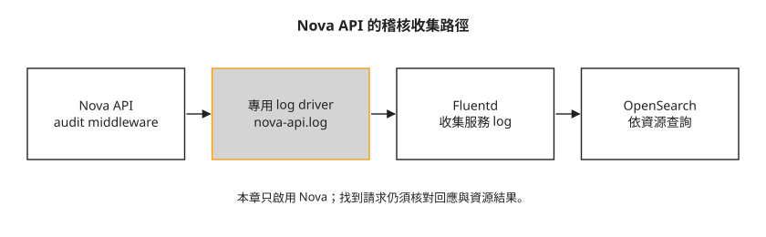

Day 34：從 Nova 的稽核事件追查 VM 操作¶
一台 VM 不見了，同事想知道誰送出了刪除要求。Nova 的一般 log 能協助排錯，但如果每次都要從不同訊息找使用者、URL 與結果，查詢很難一致。本章把 Nova API 的請求記成 CADF 事件，再送進 Day 21 的 OpenSearch；讀完能判讀請求者、操作、資源與回應，並知道這些紀錄還不能證明什麼。
先分清楚事件記錄的範圍¶
CADF（Cloud Auditing Data Federation）是描述雲端稽核事件的標準格式。這裡先看四個欄位：
| 欄位 | 要判讀的內容 |
|---|---|
initiator |
發出請求的身分，例如 user ID、來源 IP |
action |
操作類型，例如 read、create、delete |
target |
請求所針對的服務或資源 |
outcome |
這筆事件的結果，例如 pending、success、failure |
時間由 eventTime 表達。欄位有一致名稱，才方便查詢；但要保留完整事件、對照 request／response，不能只看 action=delete 就認定 VM 已經刪完。OpenStack API 常先接受非同步要求，再由背景服務執行。
本章只接 Nova API。 它不涵蓋所有 OpenStack 服務、VM 裡的命令或所有背景工作，也沒有驗證防竄改保存、保存期限與稽核告警。以下設定與結果來自本課實驗，但缺完整 config.json 持久化修改及 OpenSearch 查詢指令，應當作整合與判讀練習，不能直接視為完整部署程序。
事件從哪裡進 OpenSearch¶
Middleware 是 API 處理請求時經過的中介程式。keystonemiddleware.audit 讀取已驗證的身分與 API 資訊，產生 CADF 事件；notification driver 決定事件送去哪裡。本課選 log，讓事件先寫進 nova-api.log，再由 Day 21 的 Fluentd 收到 OpenSearch。

圖中有兩個可以分開檢查的地方：Nova log 是否出現事件，以及 OpenSearch 是否收到同一類事件。開始前須有 Day 21 的收集管線與查詢權限；如果連一般 Nova log 都查不到，應先修復那一段。
步驟 1：讓稽核使用自己的通知目的地¶
Day 28 的服務通知用 messagingv2 送到 RabbitMQ，供計量使用。稽核不需要取代它，可以在 Nova 的設定覆寫中指定獨立的通知 driver：
這表示 audit middleware 的事件走 log；服務原本的計量通知仍可走 messagingv2。不要把它誤讀成所有通知都同時複製到兩個目的地。
步驟 2：確認 audit filter 真的進入 Nova¶
Nova 的 API pipeline 是請求依序經過的處理元件。Audit 要放在 authtoken 之後，才能使用它驗證後的身分資訊。本課順序節錄如下，省略號表示其他既有元件，不能把整行當成完整配置：
api-paste.ini 裡的 filter 則指定如何載入 middleware，以及 URL 與 action 的映射檔：
[filter:audit]
paste.filter_factory = keystonemiddleware.audit:filter_factory
audit_map_file = /etc/nova/nova_api_audit_map.conf
service_name = nova
audit_map_file 必須在容器內存在，並且符合服務路徑。本課使用 /etc/nova/nova_api_audit_map.conf；自己的映像檔若路徑不同，需明確配置並確認。
接著檢查 Kolla 是否會把自訂檔案送進容器。Kolla 的 config.json 定義啟動時要複製的設定檔；本課最初的摘要是：
清單沒有 api-paste.ini，因此只把檔案放在主機的 override 目錄不會生效。本課增加複製項目並重啟後，留下以下結果：
config.json COPY: ..., api-paste.ini, nova_api_audit_map.conf
容器內 filter:audit 段數: 1
pipeline: authtoken audit ...
這證明當時的容器載入了 filter，卻沒有提供完整、能跨 deploy 保存的修改程序。生成的 config.json 下次可能被重新產生；正式採用前須把變更納入受版本管理的部署模板或自訂映像，並驗證重新部署後仍有效。本章沒有完成這項持久化驗證。
步驟 3：在 Nova log 看 request 與 response¶
對已存在的測試 VM 執行 list／show 類操作後，本課 log 出現兩種事件：
INFO oslo.messaging.notification.audit.http.request ...
INFO oslo.messaging.notification.audit.http.response ...
request 是收到要求時的事件，response 記錄 API 回應。以下為其中一筆的欄位節錄：
typeURI : http://schemas.dmtf.org/cloud/audit/1.0/event
action : read
outcome : pending
eventTime : 2026-07-16T12:58:09
誰(initiator): user=1384190d... @ 172.17.0.2
agent=cluster-api-provider-openstack
對誰(target) : /v2.1/servers/9d978419-...
action=read 表示讀取，outcome=pending 表示這筆不是已完成結果。initiator.user 可用來對照 Keystone 身分；agent=cluster-api-provider-openstack 是用戶端送來的 user-agent，顯示可能來自 CAPO，但該字串本身可由用戶端設定，不能單獨證明操作者身分。
CADF 內容位於通知外層的 payload，也就是事件資料本體。抽欄位時先進入 payload，再取 action／initiator／target。若只在最外層找，可能取得空值。
步驟 4：確認 OpenSearch 收到稽核事件¶
先沿用 Day 21 的 Dashboards 登入與索引查詢方式，限定 Nova API、事件類型與測試時間範圍。以下是本課查詢摘要，索引日期與數量只代表當時資料：
找到 audit.http.request 與 programname=nova-api，能說明這類事件已經進入索引。它不證明每筆都成功收集，也不代表其他服務已啟用稽核；要再用已知測試操作檢查對應資源。
步驟 5：用 VM ID 查刪除要求¶
選一台可刪除的測試 VM，保存完整 UUID，再刪除並查詢。下面是本課操作摘要：... 省略了建立參數，UUID 也經截短，不能原樣貼上執行：
openstack server create audit-victim ... --wait # 5ffbfcd0-...
openstack server delete 5ffbfcd0-...
# 從 OpenSearch 查這個 VMID 的稽核事件
在 OpenSearch 查該完整 VM UUID，並對照 action、initiator 與時間。本課留下的事件節錄是：
命中 7 筆含此 VMID 的稽核事件:
12:59:14 | action=delete | user=1384190dc012 | path=/v2.1/servers/5ffbfcd0-...
12:59:13 | action=read | user=1384190dc012 | path=/v2.1/servers/5ffbfcd0-...
12:59:12 | action=read | user=1384190dc012 | path=/v2.1/servers/5ffbfcd0-...
...
這裡可辨認出使用同一 user ID 的讀取與刪除要求。它還沒有列出對應 response 的 outcome，也不是 VM 全生命週期的完整證據；若要確認刪除真的完成，還要對照 API 回應與 Nova 資源狀態或後續服務紀錄。若帳號由多個人或自動化共用，也不能只憑 user ID 判斷是哪位自然人。
查不到時，依序回到 Nova log、Fluentd 與 OpenSearch 的時間範圍／索引。Nova 沒產生事件與 OpenSearch 沒收進事件，修法不同。
疑難排解¶
deploy 成功，容器卻沒有 audit filter¶
核對容器中的 api-paste.ini 與 config.json 複製清單。若檔案沒在清單內，放進主機 override 目錄也不會生效；步驟 2 說明本課曾成功載入的結果與持久化缺口。
原始事件有內容，抽出的欄位卻全是空值¶
先確認 JSON 的層級。通知外層包含 event type 等資訊，CADF 欄位在 payload 裡；不要因為頂層查不到就斷定 middleware 沒有產生資料。
Nova log 與 OpenSearch 都沒有稽核事件¶
在確認 filter 已載入後，檢查 [audit_middleware_notifications] 是否指定 log driver。計量用的 messagingv2 不會自動把同一批事件寫入 Nova log，步驟 1 的設定是獨立目的地。
重新部署後 audit 設定消失¶
生成的 config.json 會受 Kolla 部署模板管理，直接修改生成檔可能在下次 deploy 被覆蓋。應檢查持久化的模板或映像變更是否仍在、檔案是否仍被複製，再用測試操作確認事件；本課未提供完成這項修復的驗證結果。
想一想¶
- OpenSearch 找到
action=delete，但沒有 response outcome。能直接判定 VM 已經刪除完成嗎？還缺哪些資料？ - 容器 healthy，deploy 也成功，為什麼仍可能完全沒有 CADF 事件？你會查哪份複製清單？
- user-agent 寫 CAPO、user ID 是共用服務帳號，能據此指認某位同事嗎？
小結¶
本章在 Nova API 插入 audit middleware，讓標準化事件經服務 log 與 Fluentd 進入 OpenSearch。查詢時把請求者、操作、資源與 outcome 一起讀，並區分 API 收到要求與背景工作完成。此實驗只涵蓋 Nova，設定跨部署保存、其他服務與稽核保存制度仍需另行設計及驗證。
延伸閱讀¶
想再深入，可以從這幾份開始：
- keystonemiddleware 2025.1 audit 指南：pipeline、audit map 與獨立通知 driver。
- Kolla-Ansible stable/2025.1 Nova API 設定模板：檢查容器實際載入哪些設定檔。
- pycadf 文件：CADF 事件模型與 OpenStack 實作。
下一步¶
Day 35 把租戶、計量、復原與安全整合起來，回顧哪些能力已經驗到，哪些還需要額外的營運設計。